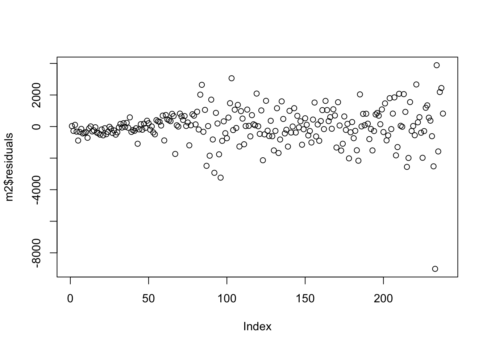
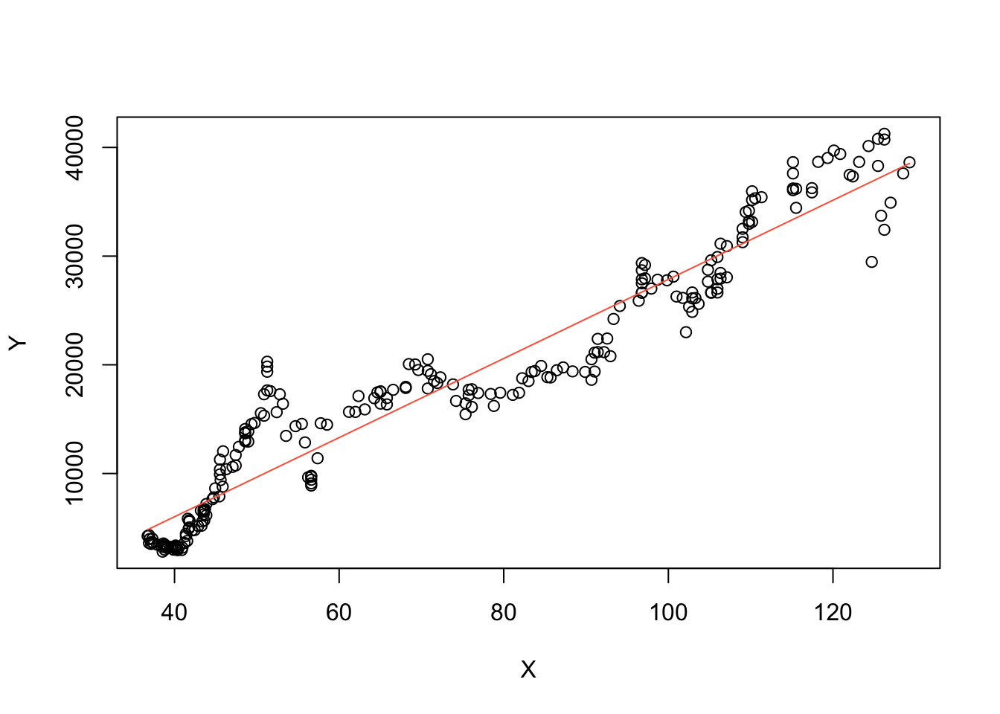
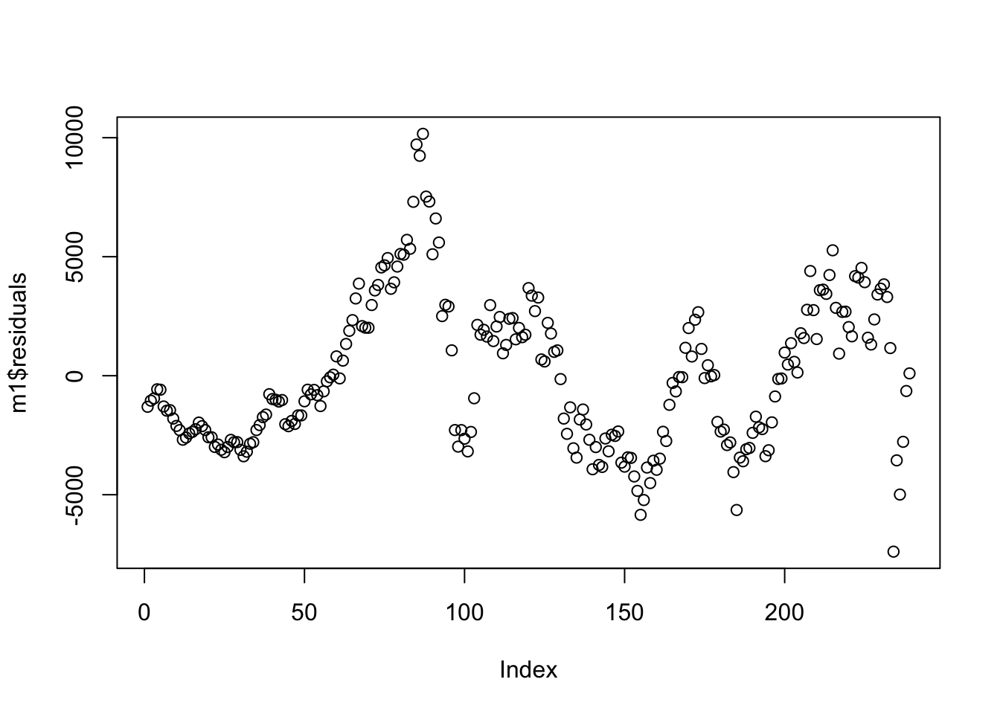
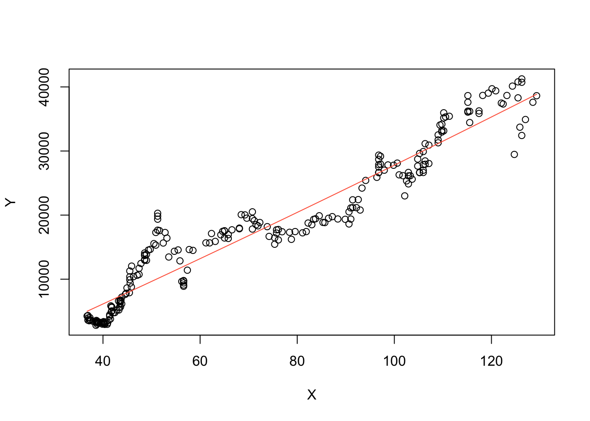
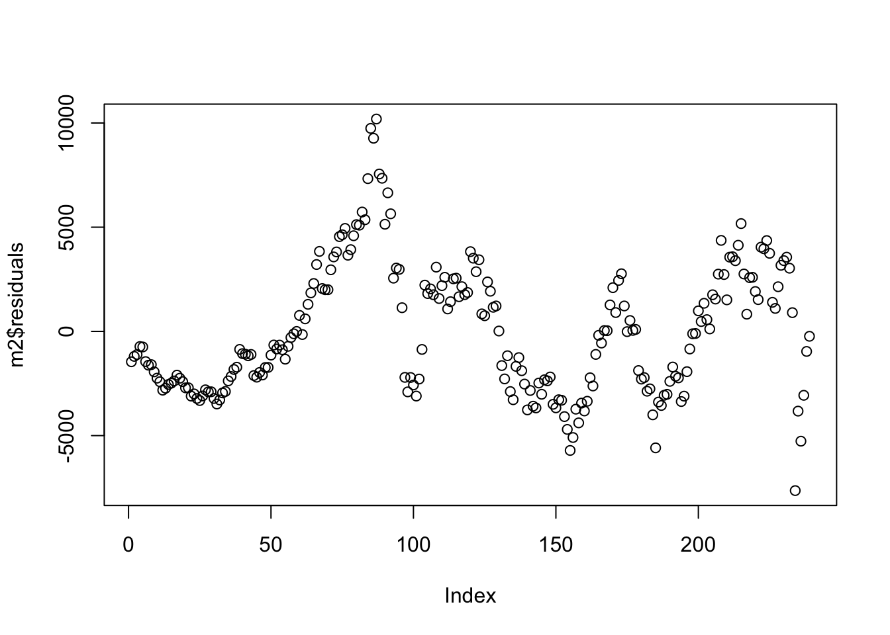
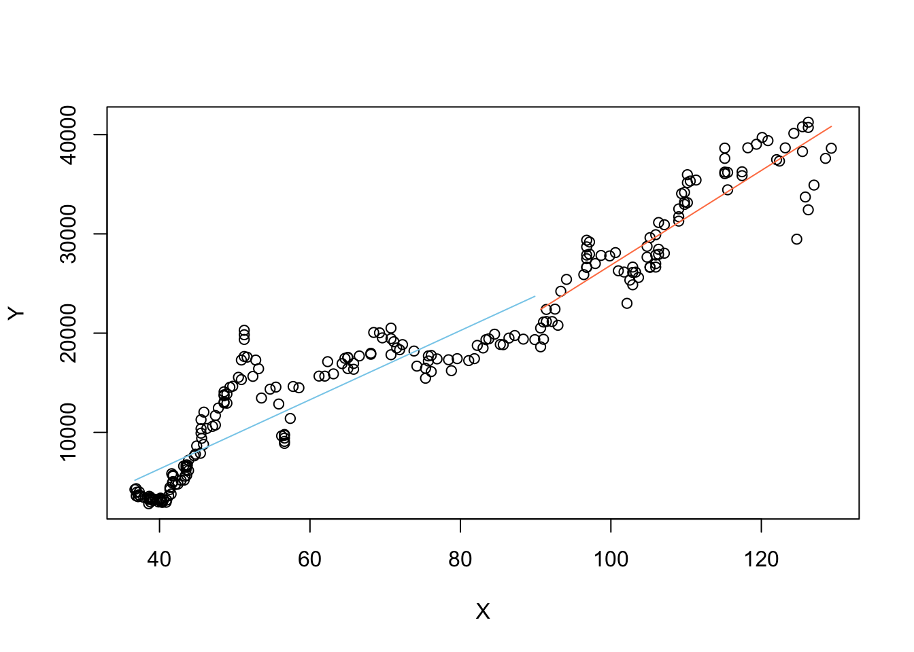
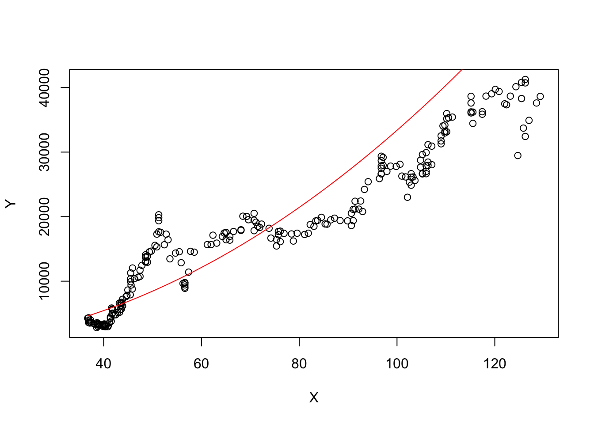
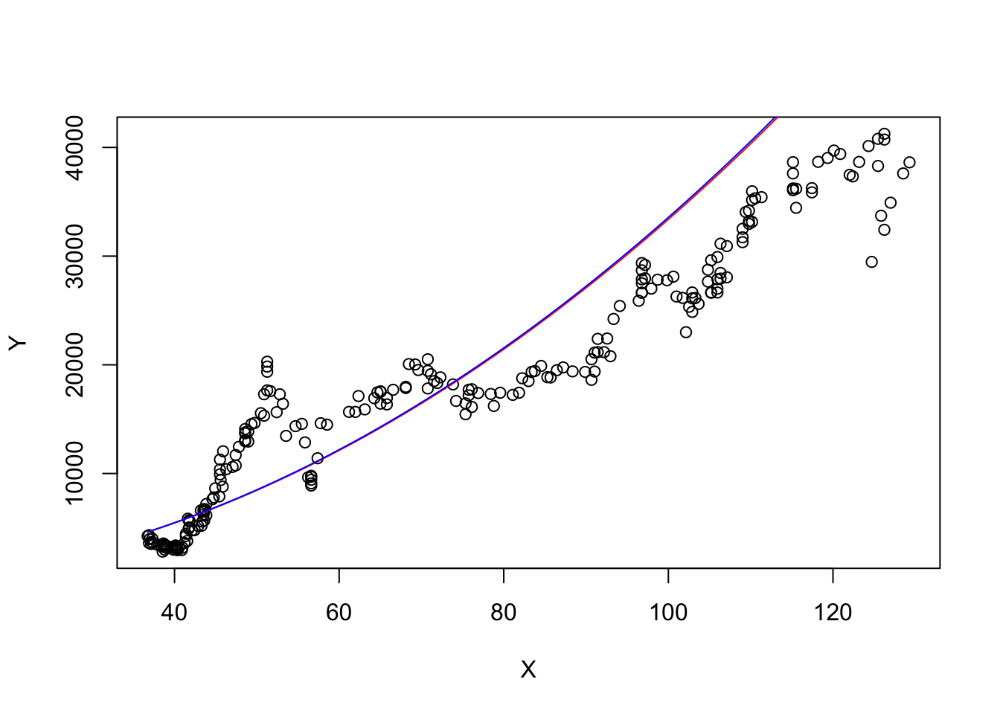

To obtain a decent pair of covariates that have the property of Bi-directional causality both mathematically and logically, so that they fit well into the paradigm of SWAP.
For this I consider the Top 50 Macroeconomic Indicators of the Indian Economy, made public by the Reserve Bank of India. These parameters have a natural and intuitive correlation between them that can easily be tested.
Consider the following two variables:
# Necessary Librarieslibrary(dplyr)
Attaching package: 'dplyr'
The following objects are masked from 'package:stats':
filter, lag
The following objects are masked from 'package:base':
intersect, setdiff, setequal, union
Call:
lm(formula = Y ~ X + Y.lag1)
Residuals:
Min 1Q Median 3Q Max
-2.4271 -0.4675 -0.0695 0.3739 4.4254
Coefficients:
Estimate Std. Error t value Pr(>|t|)
(Intercept) 1.453e-01 4.588e-01 0.317 0.752
X 6.571e-06 1.043e-05 0.630 0.529
Y.lag1 9.973e-01 1.121e-02 88.956 <2e-16 ***
---
Signif. codes: 0 '***' 0.001 '**' 0.01 '*' 0.05 '.' 0.1 ' ' 1
Residual standard error: 0.9605 on 235 degrees of freedom
Multiple R-squared: 0.9914, Adjusted R-squared: 0.9913
F-statistic: 1.357e+04 on 2 and 235 DF, p-value: < 2.2e-16
# Directrion 2m2 <-lm(X~Y+X.lag1)summary(m2)
Call:
lm(formula = X ~ Y + X.lag1)
Residuals:
Min 1Q Median 3Q Max
-9016.2 -427.5 0.9 629.7 3886.4
Coefficients:
Estimate Std. Error t value Pr(>|t|)
(Intercept) -525.38411 565.35019 -0.929 0.354
Y 18.00110 13.77422 1.307 0.193
X.lag1 0.98358 0.01295 75.929 <2e-16 ***
---
Signif. codes: 0 '***' 0.001 '**' 0.01 '*' 0.05 '.' 0.1 ' ' 1
Residual standard error: 1194 on 235 degrees of freedom
Multiple R-squared: 0.9883, Adjusted R-squared: 0.9882
F-statistic: 9960 on 2 and 235 DF, p-value: < 2.2e-16
# ANOVAanova(m1,m2)
Warning in anova.lmlist(object, ...): models with response '"X"' removed
because response differs from model 1
Analysis of Variance Table
Response: Y
Df Sum Sq Mean Sq F value Pr(>F)
X 1 17731.5 17731.5 19221.8 < 2.2e-16 ***
Y.lag1 1 7299.6 7299.6 7913.1 < 2.2e-16 ***
Residuals 235 216.8 0.9
---
Signif. codes: 0 '***' 0.001 '**' 0.01 '*' 0.05 '.' 0.1 ' ' 1
Here, we observe that \(X\) is causal for \(Y\) but not the other way round. This goes to show that the USD-INR index affect Sensex but not the other way round.
The logical explanation between the inherent relationship is explored in finance literature very often. One example that I can cite here would be Batra, V., Kandpal, D. and Sinha, R., [2020]. [Relationship between exchange rate (usd/inr) and stock market indices in India (sensex)]
We can observe the same from the residuals below.
plot(m1$residuals)
plot(m2$residuals)

Consumer Price Index vs. Sensex
cor(dat.gold$CPI,dat.gold$Sensex)
[1] 0.9603342
plot.ts(dat.gold$CPI, main ="Consumer Price Index")
Call:
lm(formula = Y ~ X + Y.lag1)
Residuals:
Min 1Q Median 3Q Max
-1.88930 -0.31254 0.00468 0.30509 3.10851
Coefficients:
Estimate Std. Error t value Pr(>|t|)
(Intercept) 3.113e-01 1.480e-01 2.103 0.0365 *
X 2.894e-05 1.238e-05 2.339 0.0202 *
Y.lag1 9.938e-01 4.711e-03 210.969 <2e-16 ***
---
Signif. codes: 0 '***' 0.001 '**' 0.01 '*' 0.05 '.' 0.1 ' ' 1
Residual standard error: 0.5919 on 235 degrees of freedom
Multiple R-squared: 0.9996, Adjusted R-squared: 0.9996
F-statistic: 2.857e+05 on 2 and 235 DF, p-value: < 2.2e-16
# Directrion 2m2 <-lm(X~Y+X.lag1)summary(m2)
Call:
lm(formula = X ~ Y + X.lag1)
Residuals:
Min 1Q Median 3Q Max
-8924.6 -475.9 -3.8 620.2 3470.6
Coefficients:
Estimate Std. Error t value Pr(>|t|)
(Intercept) -586.81355 297.19609 -1.974 0.04950 *
Y 28.10887 9.37582 2.998 0.00301 **
X.lag1 0.92629 0.02484 37.296 < 2e-16 ***
---
Signif. codes: 0 '***' 0.001 '**' 0.01 '*' 0.05 '.' 0.1 ' ' 1
Residual standard error: 1177 on 235 degrees of freedom
Multiple R-squared: 0.9887, Adjusted R-squared: 0.9886
F-statistic: 1.027e+04 on 2 and 235 DF, p-value: < 2.2e-16
Finally for this model we can observe a bi-directional causality going from \(X \rightarrow Y\) and \(Y \rightarrow X\). This is exactly what we need to fit the data in the SWAP paradigm and best model the trend.
Looking at the data
# Preparing the dataY <- dat.gold$SensexX <- dat.gold$CPI# Observing the dataplot(X,Y)# A simple linear model m1 <-lm(Y~X)plot(X,Y)lines(X,m1$fitted.values, col ="tomato")

## Residual Analysisplot(m1$residuals)

# We still observe some trend here so the fit is not ideal# A quadratic fitX2 <- X^2m2 <-lm(Y~X+X2)plot(X,Y)lines(X,cbind(1,X,X2)%*%m2$coefficients, col ="tomato")

## Residual Analysisplot(m2$residuals)

Test for Homoscedasticity
library(car)
Loading required package: carData
Attaching package: 'car'
The following object is masked from 'package:dplyr':
recode
ncvTest(m1)
Non-constant Variance Score Test
Variance formula: ~ fitted.values
Chisquare = 0.05126741, Df = 1, p = 0.82087
ncvTest(m2)
Non-constant Variance Score Test
Variance formula: ~ fitted.values
Chisquare = 0.2809971, Df = 1, p = 0.59605
SWAP Regression
From observing the residual plots we can clearly see that we need a better model to fit the data that we have on our hands.
We try the SWAP paradigm on this data set considering some natural breaking points.
plot(X,Y)# part - 1X1 <- X[which(X<90)]Y1 <- Y[which(X<90)]m1 <-lm(Y1~X1)# part -2X2 <- X[which(X>=90)]Y2 <- Y[which(X>=90)]m2 <-lm(Y2~X2)lines(X1,m1$fitted.values, col ="skyblue")lines(X2,m2$fitted.values, col ="coral")

Now we try to fit the SWAP model on the data
To try and identify a few break points, we perform unit-root and ADF test on the data.
library(tseries)
Warning: package 'tseries' was built under R version 4.3.3
Registered S3 method overwritten by 'quantmod':
method from
as.zoo.data.frame zoo
adf.test(Y)
Augmented Dickey-Fuller Test
data: Y
Dickey-Fuller = -2.9821, Lag order = 6, p-value = 0.1628
alternative hypothesis: stationary
This shows that our hypothesis is accepted, in other words, \(Y\) is not stationary.
Running the SWAP model.
# Model ax^2 + bx + c = 0a =0b =0c =1der_a <-function(X,Y,a,b,c){ loss <- (Y-(a*X^2+ b*X + c))*(-2*X^2)return(sum(loss)/length(X))}der_b <-function(X,Y,a,b,c){ loss <- (Y-(a*X^2+ b*X + c))*(-2*X)return(sum(loss)/length(X))}der_c <-function(X,Y,a,b,c){ loss <- (Y-(a*X^2+ b*X + c))*(-2)return(sum(loss)/length(X))}# part - 1X1 <- X[which(X<90)]Y1 <- Y[which(X<90)]n =10000lr =1e-8for(i in1:n){ a_n <- a - lr*der_a(X1,Y1,a,b,c) b_n <- b - lr*der_b(X1,Y1,a,b,c) c_n <- c - lr*der_c(X1,Y1,a,b,c) a <- a_n b <- b_n c <- c_n}py <- a*X^2+ b*X + cplot(X,Y)lines(X,py,col ="red")

print(paste("a = ",a,"b = ",b,"c = ",c))
[1] "a = 3.2944519745303 b = 4.36747730536588 c = 1.12433971016516"
# part -2der_inv_a <-function(X,Y,a,b,c){ loss <- (X - (-b/(2*a) +sqrt(b^2-4*a*(c-Y))/(2*a)))*(b -2*a*(c-Y)/sqrt(b^2-4*a*(c-Y)) -sqrt(b^2-4*a*(c-Y)))/(2*a^2)return(sum(loss)/length(X))}der_inv_b <-function(X,Y,a,b,c){ loss <- (X - (-b/(2*a) +sqrt(b^2-4*a*(c-Y))/(2*a)))*(b/sqrt(b^2-4*a*(c-Y)) -1)/(2*a)return(sum(loss)/length(X))}der_inv_c <-function(X,Y,a,b,c){ loss <- (Y-(a*X^2+ b*X + c))*(-2/sqrt(b^2-4*a*(c-Y)))return(sum(loss)/length(X))}X2 <- X[which(X>=90)]Y2 <- Y[which(X>=90)]for(i in1:n){ a_n <- a - lr*der_inv_a(X2,Y2,a,b,c) b_n <- b - lr*der_inv_b(X2,Y2,a,b,c) c_n <- c - lr*der_inv_c(X2,Y2,a,b,c) a <- a_n b <- b_n c <- c_n}p2y <- a*X^2+ b*X + cplot(X,Y)lines(X,py,col ="red")lines(X,p2y,col ="blue")

print(paste("a = ",a,"b = ",b,"c = ",c))
[1] "a = 3.3126875660774 b = 4.36766845111315 c = 1.12160021531396"